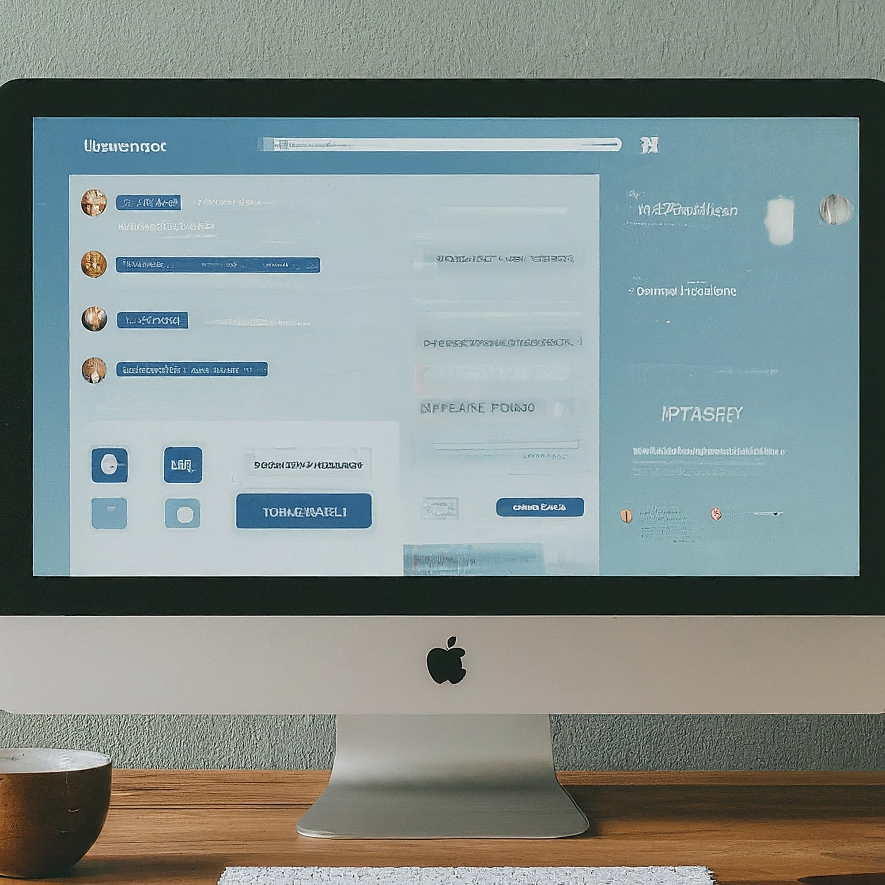

Empowering Education in 2024: Why Drupal is Your Ideal Learning CMS
The educational landscape is undergoing a rapid transformation. As technology continues to evolve, institutions are embracing innovative solutions to enhance learning experiences and cater to the needs of a digital-native generation. In this dynamic environment, Drupal, a powerful open-source content management system (CMS), emerges as a frontrunner for building robust and secure Learning Management Systems (LMS). This blog post explores why Drupal stands as the ideal CMS for educational institutions seeking to empower education in 2024.
Building a Secure and Scalable LMS with Drupal
Drupal empowers you to construct a secure and scalable LMS tailored to your specific educational needs. Here's how:
-

Unmatched Scalability: Drupal thrives under pressure. It can handle a high volume of users and content, making it ideal for institutions of all sizes, from small schools to sprawling universities. As your student body and online course offerings grow, Drupal seamlessly scales to meet your evolving needs.
-
Robust Security: Protecting student data is paramount. Drupal's open-source nature fosters a large and active developer community constantly working to ensure top-notch security. Regular updates and robust security features make Drupal a trusted platform for handling sensitive educational data. Rest assured, your students' information is safe and secure.
-
Modular Design: Unlike a one-size-fits-all solution, Drupal offers a modular design. A vast library of modules allows you to build an LMS that perfectly aligns with your institution's goals. Whether you require features for online courses, faculty profiles, interactive student portals, or anything in between, Drupal has the tools to bring your vision to life.
User-Centric Features for Enhanced Learning
Engaging students in the online learning environment is crucial. Drupal empowers educators to create user-friendly and personalized experiences that foster a thriving learning community:
-

Intuitive Interface: Drupal's user-friendly interface allows educators to create interactive content, personalized dashboards, and easy navigation tools. This ensures a smooth learning journey for students, keeping them motivated and actively engaged in the online learning process.
-
Collaboration Made Easy:
Education flourishes through collaboration. Drupal facilitates seamless communication between faculty, staff, and students. Built-in features like forums, discussion boards, and private messaging tools encourage collaboration and knowledge sharing, enriching the learning experience for everyone involved.
-
Personalized Learning:
With Drupal, you can cater to individual learning styles. The platform allows for personalized content delivery and progress tracking, enabling educators to tailor the learning experience to each student's needs.
Why Drupal? The Edge Over Other Options
While several content management systems cater to educational institutions, Drupal offers distinct advantages:
-
Open Source and Cost-Effective:
Unlike proprietary solutions with hefty licensing fees, Drupal is open-source and free to use. This makes it a budget-friendly option for institutions seeking to build a robust LMS without breaking the bank.
-
Large and Active Community:
Drupal boasts a vast and supportive community of developers and users. This translates to readily available resources, tutorials, and ongoing support, ensuring you're never alone on your Drupal journey.
-
Future-Proof Technology:
Drupal is constantly evolving to meet the ever-changing needs of the digital world. By choosing Drupal, you're investing in a future-proof solution that can support your online learning initiatives for years to come.